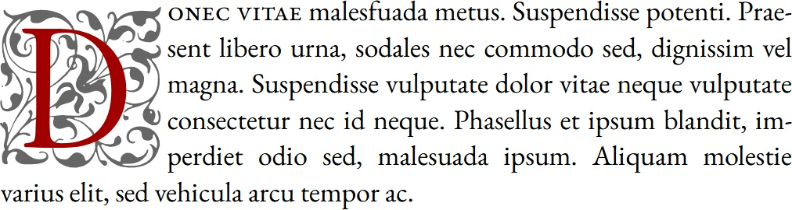

Un capolettera per Garamontio
È possibile testare il font.
Descrizione
Il font Garamontio Capo è basato su capolettera rinascimentali (Renaissance-Initialen) pubblicati da Ludwig Petzendorfer nel 1889. Sono presenti solo le lettera da A a Z.
A B C D E F G H I J K L M N O P Q R S T U V W X Y Z
Un test con il carattere Garamontio (impaginato con LibreOffice Writer):
